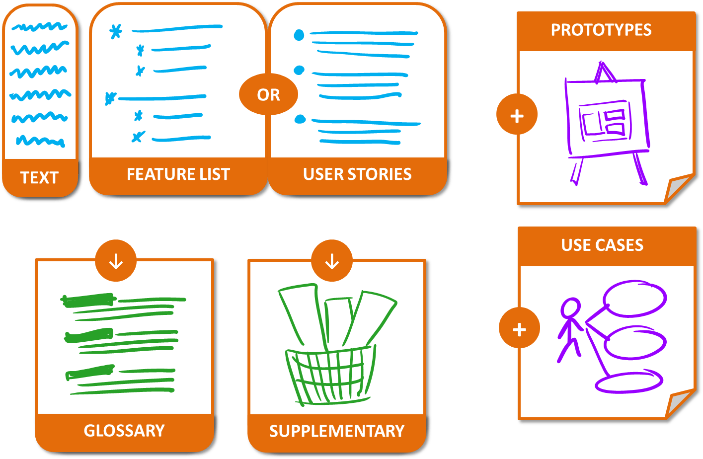

Lecture 3: From program to a product idea
[35 minutes] Part 1 - Problem before solution: figuring out requirements
|  |
Overview: There are many ways to gather, analyze and document requirements. Topics: establishing requirements, specifying requirements |
Resources:
- Interesting side reading
-
Sample specifications - These show how the format of requirements/system
specification can differ based on the nature of the project.
- TEAMMATES - Note that this specification is more detailed than what is expected from you. Reason: TEAMMATES is a bigger project than yours, has been in operation for several years now, and has passed through several teams of developers during this time.
- A weather-related scientific software (source: NASA) - Because of the nature of the software, the specification is very technical, detailed, and completely text-based.
- Humor : Dilbert on user stories, Dilbert asks a user for requirements, Alice asks a user for requirements
[35 minutes] Part 2 - From the magician's hat: designing the product

|
Overview: It is important to consider the proposed product from the users' point of view and provide good solutions to users' problems rather than slap together a slew of features that you as developers find interesting. UI prototypes are especially useful in visualizing the product early and improving the user experience. Topics: product design |
Resources:
- Interesting side reading
- [Web article] The 11 deadly sins of product development
- [Web article] First Principles of Interaction Design - This it totally out of scope of this module, but a good read for folks who are deeply interested in designing good products and can’t wait till you read relevant modules later.
- [Web article] skeuomorphism vs flat design - For those who are interested in GUI design. Out of scope of this module.
- [Web article] People don’t want drills, they want holes